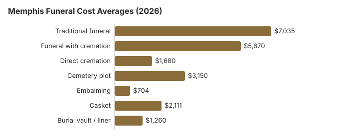

Funeral Costs in Memphis, Tennessee (2026)
Funeral pricing in Memphis lands roughly in line with the rest of Tennessee, with traditional services averaging around $7,035 and direct cremation starting near $1,680. The gap between providers in a single metro is often wider than the gap between cities, which is why comparison shopping matters most here.
Complete Cost Breakdown for Memphis
The following table breaks down average funeral costs in the Memphis metropolitan area compared to Tennessee state averages. These Memphis figures are our estimate, not a survey of Memphis funeral homes: we multiplied our Tennessee state estimates by 1.05 to allow for local costs, using regional price parity data as a guide.
| Service | Memphis Avg. | Tennessee Avg. |
|---|---|---|
| Traditional funeral | $7,035 | $6,700 |
| Funeral with cremation | $5,670 | $5,400 |
| Direct cremation | $1,680 | $1,600 |
| Cemetery plot | $3,150 | $3,000 |
| Embalming | $704 | $670 |
| Casket | $2,111 | $2,010 |
| Burial vault / liner | $1,260 | $1,200 |
| Headstone / marker | $1,500 – $3,000 | $1,000 – $3,000 |

Understanding Memphis Funeral and Cremation Cost Pricing
Funeral costs in Memphis carry a metro premium of approximately 5% above the Tennessee state average, and the final cremation cost can vary depending on the arrangements selected in Memphis. This is driven by higher real estate costs for funeral home facilities, higher labor costs, and greater demand for services in a dense metropolitan area. However, the competitive market in Memphis also means you have more providers to choose from, which gives you leverage when comparing prices. Service level and merchandise are the main drivers of price.
Two or three General Price Lists from Memphis homes, compared line by line, will show the real spread; the funeral cost calculator totals each option. The FTC Funeral Rule requires every provider to give you the list on request, with no appointment and no commitment.
Compare: Memphis vs. Other Tennessee Cities
Funeral costs can vary significantly even within Tennessee. Here is how Memphis compares to other metro areas in the state:
| City | Traditional Funeral | Direct Cremation |
|---|---|---|
| Memphis | $7,035 | $1,680 |
| Tennessee | $7,705 | $1,840 |
| Tennessee Average | $6,700 | $1,600 |
At $7,035, Memphis runs about 5% above the Tennessee state average of $6,700, a gap of about $335 on the service alone; our Tennessee funeral cost guide shows the statewide figures. This premium reflects Memphis's higher cost of living, real estate, and provider overhead. Regardless of location, comparing at least 2-3 providers before committing can lower costs significantly.
Cremation vs. Burial in Memphis
Direct Cremation in Memphis
- Direct cremation packages in Memphis typically range from about $950 to $2,500, with local averages for cremation services often starting around $1,680
- Full-service cremation with funeral services from $5,670 usually includes a visitation, viewing with the body present, or a memorial service
- No cemetery plot needed
- Direct cremation typically does not include a memorial service, but families can arrange one separately afterward
Burial in Memphis
- Traditional service from $7,035
- Cemetery plot from $3,150
- Vault or liner typically required
- Permanent memorial location
Your Rights in Memphis
Regional Context: Funeral Pricing in the South
Homegoing services, repast meals, and strong church involvement remain part of Tennessee funeral culture, and many congregations will cover or reduce the service-venue portion of the cost for members. When pricing a traditional funeral in Tennessee, ask explicitly whether the quote assumes the service at the funeral home versus at a church; the latter often drops the facility fee by $500-$1,500.
Ways to Reduce Costs in Memphis
- Ask three Memphis funeral homes, including a cremation-only provider, for the direct cremation and immediate burial lines on their price lists
- Consider direct cremation at $1,680 as the most affordable option; direct cremation specialists often charge less than full-service funeral homes because they have lower overhead, and more families choose this route, similar to trends in Oklahoma cremation costs starting around $1,400.
- Tennessee homes must accept a casket you buy elsewhere, and the FTC rule forbids a fee for it. Best online casket retailers
- Ask about the price of an urn or alternative container, since funeral homes often mark these up heavily and third-party sellers can cost much less.
- For a veteran, ask about Memphis National Cemetery (cremated remains only) or West Tennessee State Veterans Cemetery, and check the VA allowances; if the family cannot pay, ask the Shelby County mayor's office whether the county pays for indigent burials, which is especially important if you are planning funeral costs with no insurance coverage. See all assistance options
- Holding the gathering away from the funeral home after a direct cremation means paying no chapel fee or staff charge to the home for the service
- See our affordable funeral options guide for each low-cost route, compared with the $1,680 Memphis direct cremation estimate
- Our guide on how to pay for a funeral with no money covers Social Security's $255 payment plus other help if Shelby County will not pay
- Put each Memphis quote into our cost comparison worksheet, adding the $25 cremation permit and $15 per death certificate
Hidden Fees to Watch For in Memphis: Death Certificate and More
Charges that Memphis families most often miss on a first read of the price list:
- Casket handling fees: not allowed under the FTC Funeral Rule when the family supplies the casket; ask to have any such line removed
- Package markups: Bundles often include unnecessary services.
- Weekend/holiday surcharges: can add 15–25% to the total, so price a weekday service too
- Documentation fees: Tennessee cremation permits cost $25, and certified death certificates cost $15 each, so ordering multiple copies raises the total
- Removal and transportation charges: Distance outside the provider's local area may add extra fees, and some itemize these under basic services
- Alternative container fees: For direct cremation, an alternative container may be billed separately at about $95 to $200 if it is not bundled into the package
Educational Resources
- Funeral Consumers AllianceIndependent nonprofit consumer advocacy for funeral rights
- FTC Funeral RuleThe federal rule protecting funeral consumers
- Funeral Insurance GuideCompare final expense and burial insurance options
- Best Burial Insurance CompaniesSide-by-side comparison of top burial insurance providers
- Payment Assistance GuideGovernment programs and financial help for families facing death, funeral planning, and final expenses
- Insurance Plan ComparisonCompare coverage, premiums, and payout speed across providers
These guides also support memorial planning tools and resources for the family.
Compare Funeral Home Costs
- Average Funeral Cost in 2026National cost breakdown with real prices
- Cremation vs. Burial Cost ComparisonSide-by-side price comparison to help you decide
- Funeral Cost BreakdownEvery line item explained: know what you're paying for
- Cheapest Funeral OptionsLower-cost alternatives, with typical price ranges
- Direct Cremation: Most Affordable OptionNFDA 2023 median $2,645 with a family-supplied container (latest available)
- How to Compare Funeral PricesStep-by-step guide to getting the best price
Frequently Asked Questions
What is the typical funeral price in Memphis?
Traditional funerals in Memphis average about $7,035, running close to the Tennessee state figure of $6,700. Direct cremation starts near $1,680 and cemetery plots average $3,150. Your final total will land somewhere between $1,680 (direct cremation, simplest option) and $12,296 (full traditional burial with all trimmings).
What is Memphis's cremation-versus-burial split?
Memphis largely follows Tennessee's 42% cremation rate. The economics are stark (direct cremation near $1,680 against a traditional funeral at $7,035 plus $3,150 for the plot), so cost is the primary driver locally, and more families choose cremation because it avoids many traditional service costs. A memorial service after cremation is the most common hybrid choice in the Memphis metro.
How do Memphis funeral costs compare to the national average?
Memphis funeral costs are below the national average of $8,300 for a traditional funeral. The Memphis metro area's cost of living somewhat influences local funeral pricing. While costs are manageable, comparing at least 2-3 providers can still lower the total.
How do I compare funeral quotes in Memphis?
The FTC Funeral Rule requires every Memphis funeral home to give you an itemized General Price List on request: no appointment, no commitment. Call two or three Memphis providers and ask for their GPL over the phone or by email. For extra perspective, Parting.com aggregates Memphis-area quotes and the Funeral Consumers Alliance offers independent resources.
What does direct cremation include in Memphis?
Direct cremation in Memphis is the simplest, most affordable option at about $1,680. The cremation process usually covers removal and transport of the body, filing the required paperwork, permit approval, the cremation permit from the county medical examiner (Tennessee sets no fixed waiting period; Tenn. Code Ann. 62-5-504), the cremation itself, and return of the remains, and direct cremation requires minimal professional service fees. The deceased is usually placed in an alternative container, and the cremated remains are often returned in a temporary container unless an urn is purchased. Everything else (viewing, ceremony, embalming) is skipped. Many Memphis families hold a memorial afterward at a church, home, park, or any venue of their choice.
Are there affordable funeral options in Memphis?
Direct cremation from $1,680 is the most affordable. You can also consider direct burial (no service), memorial-only services, or home funerals where permitted. Third-party caskets often cost less than funeral home prices. Veteran benefits, Medicaid, and crowdfunding may also help offset costs.
Where can you scatter ashes in Tennessee?
You can scatter ashes on private property with the landowner's consent, in some Tennessee state parks with permission, or in cemeteries that offer ash-scattering memorial gardens. If you have questions about local rules or a loved one's wishes, contact the Tennessee Department of Environment or EPA Region 4 for guidance before you collect permits or plan a gathering.
More in Tennessee
Memphis funerals: Tennessee's board, Shelby County aid and the West Tennessee veterans cemeteries
Every Memphis funeral home answers to the Tennessee Board of Funeral Directors and Embalmers in Nashville. Call 615-741-5062 to confirm a license or to complain about a home that will not show its price list or bills for items you turned down.
Tennessee does not force families to use a funeral director for most steps. It is not on the Funeral Consumers Alliance list of nine states with funeral-director rules, so a Memphis family can choose only the services it wants. Cremation needs a permit before it goes ahead (Tenn. Code Ann. 62-5-504), but the state sets no minimum waiting period.
Help for a family without money depends on Shelby County. Tennessee lets each county's legislative body decide whether it will pay for the burial or cremation of a poor person, and any claim must come with a sworn statement of the cost and of the lack of other means (Tenn. Code Ann. § 5-9-101(4)). Ask the Shelby County mayor's office how the county handles this before you commit to a funeral home. Social Security's $255 death payment, limited to a qualifying spouse or child, covers only a sliver of the $7,035 Tennessee average in the table.
Memphis has its own national cemetery, but Memphis National Cemetery (901-386-8311) now takes cremated remains only. For a casket burial a funeral home can book Chattanooga National Cemetery (423-855-6590) or Mountain Home National Cemetery (423-979-3535); Knoxville (423-979-3535) and Nashville (615-860-0086) national cemeteries are also limited to cremated remains. All are scheduled through the VA's National Cemetery Scheduling Office at 800-535-1117. Closer to home, West Tennessee State Veterans Cemetery (901-543-7005) and the Tennessee State Veterans Cemetery at Parkers Crossroads (731-967-4127) take requests directly, as do East Tennessee State Veterans Cemetery (865-577-3228) and Middle Tennessee State Veterans Cemetery (615-532-2238).
Before you sign with a Memphis funeral home
- Get printed price lists from at least two Memphis homes and compare them line by line.
- Ask the Shelby County mayor's office whether the county pays for indigent burials.
- A memorial service after cremation or burial avoids embalming and viewing charges.
- For a veteran, check the West Tennessee state cemetery before buying a private plot.
- Report a home that will not honor its price list to the board at 615-741-5062.